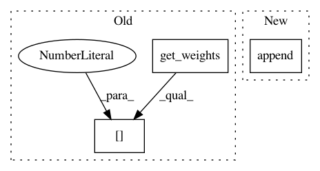

9f2a83c4ce192da805e18617ce2421bb80cfe8fe,snntoolbox/core/inisim.py,SpikeConv2DReLU,get_output,#SpikeConv2DReLU#Any#,220
Before Change
pad_x = (self.nb_row - self.subsample[0]) // 2
pad_y = (self.nb_col - self.subsample[1]) // 2
conv_out = dnn.dnn_conv(img=inp,
kerns=self.get_weights()[0],
border_mode=(pad_x, pad_y),
conv_mode=conv_mode)
else:
After Change
T.gt(1 / settings["dt"] - self.max_spikerate, epsilon),
1 / (self.max_spikerate + 0.001), 1.0)
updates.append((self.W, self.W * self.fac))
updates.append((self.b, self.b * self.fac))
// CALCULATE SYNAPTIC SUMMED INPUT
border_mode = self.border_mode
if on_gpu() and dnn.dnn_available():
In pattern: SUPERPATTERN
Frequency: 4
Non-data size: 3
Instances
Project Name: NeuromorphicProcessorProject/snn_toolbox
Commit Name: 9f2a83c4ce192da805e18617ce2421bb80cfe8fe
Time: 2016-06-29
Author: bodo.rueckauer@gmail.com
File Name: snntoolbox/core/inisim.py
Class Name: SpikeConv2DReLU
Method Name: get_output
Project Name: jhfjhfj1/autokeras
Commit Name: 1cda66554188c4504aa94d1bcffd4cef9ee8a997
Time: 2017-12-28
Author: jhfjhfj1@gmail.com
File Name: autokeras/layer_transformer.py
Class Name:
Method Name: conv_to_wider_layer
Project Name: NeuromorphicProcessorProject/snn_toolbox
Commit Name: 9f2a83c4ce192da805e18617ce2421bb80cfe8fe
Time: 2016-06-29
Author: bodo.rueckauer@gmail.com
File Name: snntoolbox/core/inisim.py
Class Name: SpikeDense
Method Name: get_output